Rocky Mountain Research Station
Moscow Forestry Sciences Laboratory
1221 South Main Street, Moscow, ID 83843
https://forest.moscowfsl.wsu.edu/
| USDA Forest Service | Rocky Mountain Research Station | Moscow FSL | Soil and Water Engineering |
|---|
INTRODUCTION
Estimates on erosion reduction were
obtained from selected treatments applied to such forest road components as
traveledway, cutslope, fillslope, and ditch. Data from the literature and from
in-house research reports provide better insight into effective treatments to
reduce erosion. These results should have application to revisions of the "Guide
for Predicting Sediment Yields from Forested Watersheds" (Cline and others
1981) developed for the Forest Service's Northern and Intermountain Regions.
This guide was originally designed as a method to estimate increases in sediment
production from watersheds as the result of various land management practices.
The current Sediment Guide for the Northern (R-1)
and Intermountain (R-4) Regions allows a percentage reduction in sediment yield
from the total road prism as the result of applying a single erosion control
practice, or the application of a combination of practices (Cline and others
1981, table 4). These reductions in onsite sediment production
from the total road imply a partitioning of total sediment production of about
60 percent from fillslopes, 25 percent from traveledways, and 15 percent from
the cutslope and ditch. This partitioning was discovered by comparing erosion
reduction factors in the guide with the amount of erosion reduction for individual
road prism components as given in the literature cited in the guide's table 4.
New information about onsite road sediment is based on studies by the
Intermountain Research Station's Engineering Technology and Watershed Management
Research Work Units. These studies show that partitioning of sediment production
may be significantly different from that used in the guide and can change as
a mitigation measure applied to one road prism component influences sediment
yield from other components. This report discusses the potential for reduction
of onsite sediment production by various treatments on each component of the
road prism.
MITIGATION OF EROSION
Based on our research and the literature, we have
compiled a comprehensive study of the mitigation of erosion from specific components
of the road prism: traveledways, fillslopes, cutslopes, and roadside ditches.
Because the sediment yields from adjacent components are not directly additive,
we need also to review studies on combined erosion control for these areas.
Traveledways
Data on erosion reduction from treated traveledways
come from two types of experiments: (1) natural rainstorms and snowmelt on road
segments defined by cross drains or dips and (2) simulated rainfall on bordered
road segments or small bordered plots. A study of sediment production from treated
and untreated road segments subject to natural climatic events was completed
by Swift (1984b) in North Carolina. Sediment production in tons per acre per
inch of precipitation was measured for bare traveledways before and during timber
harvest and also for graveled traveledways subject to light vehicle traffic.
These data show that logging traffic on an unsurfaced traveledway can increase
sediment production by a factor of 1.90. Our measurements of sediment production
from an unsurfaced traveledway in border-zone batholith material with simulated
rainfall showed that a surface rutted by a heavy truck will produce 2.08 times
the yield of a smooth surface (Burroughs and others 1984). We recommend that
the estimated sediment production for a rutted, unsurfaced traveledway be increased
by a factor of 2, relative to the yield from a smooth, unsurfaced traveledway.
Swift's (1984b) study farther showed that placement
of a 6-inch lift of 1.5-inch minus crushed rock reduced sediment production
by 70 percent from the unsurfaced condition over a 5-month period. The gravel
achieved this amount of protection even though this period included 6.46 inches
of rainfall in 5 days. In 13.3 months, the gravel with established grass at
the margins of the traveledway reduced sediment production by over 84 percent
compared to 9.5 months when the road was unsurfaced.
Simulated rainfall was applied to two 100-ft bordered
sections of the Rainy Day road, Nez Perce National Forest, built in "border-zone
batholith" material of gneiss and schist (Burroughs and others 1985a).
One section was left unsurfaced and the other was surfaced with a 4-inch lift
of 1.5-inch minus hard gneissic crushed rock. Each section was 13 ft wide with
an 8 percent centerline grade and was insloped at 4.4 percent to a standard
ditch. Total sediment for the first rainfall application on the gravel-surfaced
road section was 64.3 lb from 1.05 inches of rainfall, or 61.2 lb per inch of
rainfall. Total sediment from the first rainfall on the unsurfaced road section
was 312.1 lb per 1.08 inches of rainfall, or 289.0 lb per inch of rainfall.
The reduction in sediment production by graveling this road section was 79 percent,
which compares well with Swift's (1984b) results for a section of road protected
only by gravel.
Other data by Swift (1984a) show that the thickness
of the gravel layer is important. Two inches of crushed rock (1.5 inch minus)
placed on a road built in sandy loam soil showed no sediment reduction over
the yield from an unprotected road. A 6-inch lift of crushed rock (1.5 inch
minus) reduced sediment yield by about 92 percent, and an 8-inch layer of large
stone (3.0-inch D50) reduced sediment production by about 97 percent.
A similar study in West Virginia by Kochenderfer
and Helvey (1987) tested roads surfaced with 6-inch lifts of 3-inch washed gravel
(size ranged from 1.5 to 3 inches) and 3-inch crusher-run gravel. Average reductions
in sediment production were 88 percent and 79 percent, respectively, over an
unprotected road during the 4-year measurement period.
Mitigation of sediment production by graveling
is a function of the erodibility of both the gravel and the underlying material.
Erosion reduction by gravel surfacing is maximized by the use of hard crushed
rock over highly erodible subgrade material.
Measurements of sediment production from surfaced
and unsurfaced traveledways were made using simulated rainfall on bounded segments
of forest roads (Burroughs and others 1983a; Burroughs and King 1985b). Sediment
production was measured on three segments of an unsurfaced road built in granitic
materials in Silver Creek, ID, and are compared to two road segments surfaced
with dust oil and bituminous surface treatment. Dust oil and the bituminous
surface treatment reduced sediment production by 85.3 percent and 96.6 percent,
respectively (Burroughs and others 1983a) compared to sediment production from
unsurfaced roads. There are drawbacks to each of these treatments: dust oil
releases volatile chemicals into surface runoff and the surface breaks down
easily under heavy traffic; and bituminous surface treatment is expensive. No
good data were found on sediment reduction by lime or magnesium chloride.
Fillslopes
The success in minimizing fillslope surface erosion
will depend on the timing of application of any control measure, the type of
treatment, the rate of application for mulch treatments, the inherent erodibility
of the soil, the slope gradient, and whether or not the road is insloped. This
section discusses the effectiveness of various treatments for controling surface
erosion on new fillslopes.
Most studies that have measured sediment production
from fillslopes over time show that, initially, rates in this unconsolidated
material are high and exponentially decrease over time (Megahan 1974; King 1984).
For example, figure 1 illustrates the cumulative fillslope sediment production
for the first summer and fall following construction of 1.5 miles of road in
the Horse Creek watersheds of northern Idaho. This road was completed and sediment
production measurements were initiated in mid-August 1978. The fillslopes were
hydromulched, seeded, and fertilized in mid-September. During the first 30 days,
about 3 inches of rain fell, which included 5 days with amounts greater than
0.3 inches. This was an unusually high rainfall for this period. The average
amount of rainfall expected during 30 days in August and September is slightly
less than 2 inches. The single largest event was a 0.89-inch thunderstorm that
occurred 5 days after the beginning of measurements. Initially, fillslope sediment
production was responsive to rainfall, partially because of the absence of mulch
and the availability of easily eroded particles on the unconsolidated fillslopes.
About half of the total fillslope sediment production measured over a 2-year
period took place in the first summer and fall. Thus, erosion control measures
that can be put in place immediately after fillslope construction have a much
larger potential to appreciably reduce sediment production compared to measures
that are implemented later.
If treatment is delayed following road completion,
we suggest that the percentage of erosion reduction be decreased. The time delay
in treatment, expected precipitation, and armoring effects should all be considered
in estimating a weighted sediment reduction percentage.
We analyzed published data and in-house research
results to determine how selected erosion control treatments compared and how
their effectiveness was influenced by soil characteristics, slope gradient,
and ground cover. We identified six treatments: (1) straw with asphalt tack,
(2) straw with a net or mat, (3) straw alone, (4) erosion control mats, (5)
wood chips or rock, and (6) hydromulch. Figures 2 through
8 illustrate the increasing effectiveness of each treatment
with increasing ground cover. Of lesser importance in these data sets was silt
content of the underlying soil and slope gradient. Generally, the steeper the
slope and the siltier the soil, the less effective the treatment. The importance
of ground cover in reducing surface erosion for any treatment is apparent in
the similar shape of curves in figures 2 through 6.
A curve to estimate the application rate for some treatments is also given.
For example, to achieve an 80 percent reduction in erosion, estimate the required
ground cover from the main curve, then estimate the application rate to attain
that ground cover from the application rate curve. For straw mulch alone, an
80 percent erosion reduction would require 96 percent ground cover (fig.
4a), or about 2.9 tons per acre (fig. 4b).
The estimated amount of reduction in sediment
can only be achieved on smooth slopes with proper installation and anchoring
of the material, especially for mats and nets. Rocks, slope irregularities,
or gullies prevent good contact between the slope and the material and reduce
their effectiveness. The effectiveness of any mulch may be reduced where frequent
frost heave or ground ice occurs.
The curve for hydromulch shown in figure
7 does not show the same relationship between cover and sediment reduction
as the other treatments. Because it has short fiber lengths, it is easily detached
and transported off the steeper slopes by surface runoff, unless some fiber
tackifier is used. Dudeck and others (1967) compared the application of wood
cellulose fibers (1,000 lb per acre) alone and with an asphalt emulsion (150
gal per acre of 1:5 emulsion) and reported about a 35 percent decrease in relative
erosion using the emulsion.
Figure 8 shows all six treatments
plotted on the same graph to better compare their effectiveness.
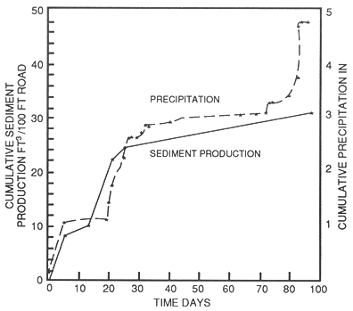
Figure 1 -- Cumulative fillslope sediment production from rainfall.
| 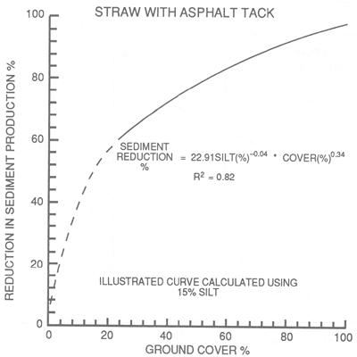 | 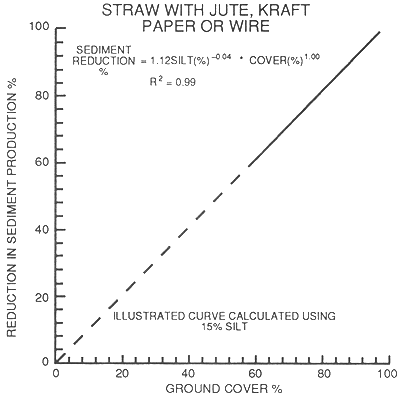 |
| Figure 2 -- Erosion reduction provided by straw with an asphalt tack (Barnett and others 1967; Dudeck and others 1967; Kay 1984). | Figure 3 -- Erosion reduction provided by straw with a net or mat (Bethlahmy and Kidd 1966; Dudeck and others 1967). |
| 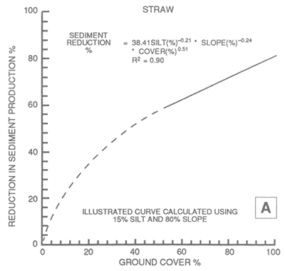 | 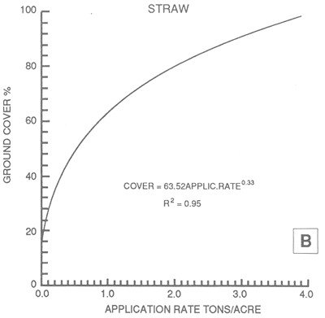 |
| Figure 4 -- (A) Erosion reduction provided by straw. (B) Ground cover provided by application rate for all straw treatment. (Barnett and others 1967; Meyer and others 1970; Kay 1984.) | |
| 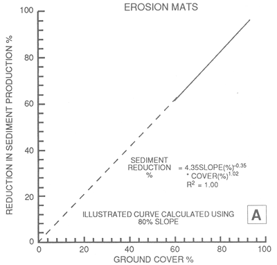 | 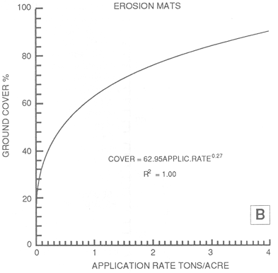 |
| Figure 5 -- (A) Erosion reduction provided by mats. (B) Ground cover provided by application rate for erosion mats. (Dudeck and others 1967; Gulf Corp. 1977; Kay 1984; Burroughs and King 1985; Burroughs and others 1985.) | |
| 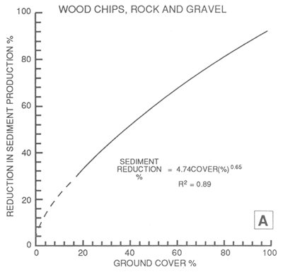 | 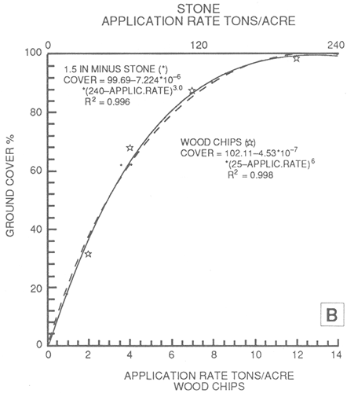 |
| Figure 6 -- (A) Erosion reduction provided by wood chip or rock mulches. (B) Ground cover provided by application rates for two mulches. (Meyer and others 1972.) | |
| 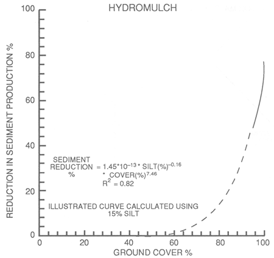 | 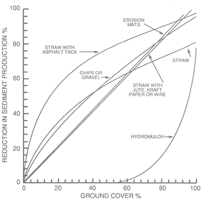 |
| Figure 7 -- Erosion reduction provided by hydromulch (Dudeck and others 1967; Kay 1984). | Figure 8 -- A comparison of erosion reduction provided by selected tretments for average site conditions. |
The effectiveness of any mulch treatment
can be reduced if traveledway drainage contributes to the fillslope, promoting
accelerated rill and gully erosion. Fillslope sediment production was measured
with unbordered plots below crowned traveledways at Horse Creek in northern
Idaho (King 1979, 1984). Almost all of the larger gullies in the fillslope were
generated from traveledway drainage. This process was more dominant than any
sheet or splash erosion process. On fillslopes with a vertical height of less
than 20 ft, reductions due to seed, hydromulch (1,500 lb per acre), or straw
mulch (2 tons per acre) with an asphalt tackifier (250 gal per acre) were statistically
similar and ranged from 46 to 58 percent over a 3-year period. The treatment
effects were also statistically similar on fills with vertical heights of 20
to 40 ft, resulting in only a 24 to 30 percent reduction. For the straw mulch
with an asphalt tackifier, the reductions were much smaller than expected because
the mulch was not able to protect the fills from concentrated drainage from
the traveledway.
Seeding alone does little to control surface erosion
until germination and growth of the new plants, and then only if the seed has
not been washed from the slope. Bethlahmy and Kidd (1966) report no sediment
reduction from dry seeded and furrowed, steep 1.25:1 decomposed granitic fills
in Idaho. In North Carolina, Swift (1984b) collected fillslope sediment data
for 9.5 months following road construction and logging, during which the fills
were not seeded. These data were compared with the sediment collected during
the first 5 and 13.3 months following seeding to show average reductions of
7 and 58 percent, respectively, for these periods as grass became established
on the fillslopes.
Wollum (1962) reported results from seeding and
fertilizing a 1.25:1 slope on layered tuffs and breccias in western Oregon.
Comparison of sediment measured over 1 year from a 6-year-old bare slope to
the erosion from the first year after seeding indicates about a 68 percent reduction.
In both these studies the comparison is between preseeded and postseeded erosion
for the same slope with no separate control slope measurements. Erosion immediately
after construction is usually high and diminishes over time as the easily dislodged
material is eroded. Thus, the 68 percent (Wollum) and 58 percent (Swift) reductions
in sediment are probably too high because of the surface armoring that occurred
during the preseeded interval.
Rolling fillslopes was evaluated on the Silver
Creek roads for layer-placed, sidecast, and controlled compaction construction.
A decrease in the infiltration capacity of the slopes due to compaction by rolling
probably generated more surface runoff and subsequently more sediment. Average
increases in sediment, compared to nonrolled slopes, ranged from 107 to 532
percent with an average increase for the 11 plots of 282 percent (Boise State
University 1984).
Also evaluated on the Silver Creek road fills
was an application of a polymer soil binder. The binder initially formed a surface
crust, which was broken by frost action and desiccation. Based on data collected
by Boise State University (1984), average sediment production from the four
polymer-treated plots was about twice that of the control plots. Because the
crust prevents any infiltration, surface runoff is increased and erosion begins
in any cracks in the crust. Kay (1984) reports that these crusts will not survive
frost heaving nor will uncured crusts survive freezing temperatures.
Filter windrows are barriers constructed of logging
slash that slow the velocity of any surface runoff, causing deposition of most
sediments. They can be constructed on or immediately below the fillslope. The
advantage of this treatment is that it can be constructed concurrent with road
construction to provide immediate control of fillslope sediment. Filter windrow
construction by hydraulic excavator (backhoe) is a cost-effective method to
incorporate erosion control into forest road construction. Field evaluation
of seven machine-constructed windrows in the Horse Creek watersheds over a 3-year
period indicated a 75 to 85 percent reduction in sediment leaving the fillslope
compared to adjacent hydromulched slopes (Cook and King 1983). We used data
from simulated rainfall on bounded fillslope plots in northern Idaho (Burroughs
and others 1985b) to estimate the effectiveness of various erosion control treatments
used singly and in combination. Figure 9 shows a sediment
reduction of about 88 percent by a hand-constructed filter windrow (same specifications
as machine-constructed) for the first rainfall. The Curlex mulch is more effective
than the filter windrow, but more expensive to apply. For particularly sensitive
sites, such as forest roads above streams with high values for water quality,
the combination of a filter windrow with Curlex mulch provides about 99 percent
sediment reduction. In North Carolina, Swift (1985) evaluated "brush barriers"
in terms of sediment travel distance below fillslopes and the frequency of sediment
flows. He found that both the average and maximum sediment travel distances
were about half as long below brush barriers as below fillslopes without the
barriers, and the number of sediment flows per 1,000 ft of road were reduced
by about 35 percent.
Rothwell (1983) used logging debris placed parallel
to the contour and spaced 60 to 120 cm apart on road shoulders, ditches, and
cutslopes at three stream crossings. Measurements of total suspended sediment
production above and below the road at these three crossings and three control
crossings indicated about a 75 percent decrease in storm sediment production
as the result of debris barriers.
Figure 9 -- Reductions in sediment production as the result of selected erosion control treatments and surface armoring.
Travel Distances Below Fillslopes
Although the initial rate of fillslope erosion
can be high compared to erosion rates on other road components, it is the transport
of eroded material below the fillslopes that determines the degree that streams
are affected by fill erosion. For most midslope forest roads, only those fillslopes
near stream crossings have a high potential to contribute eroded material to
streams. The slope distance required to prevent material from reaching a stream
is a function of many interacting site and climatic factors, making it difficult
to predict with any degree of accuracy. However, sediment transport distances
below fillslopes at the Horse Creek and Gospel Hump sites in northern Idaho
provide insight into relationships between transport distance and several site
characteristics.
For 1.5 miles of road constructed in Horse Creek in 1978, rills and gullies
formed in the fillslopes were inventoried and transport distances measured each
spring and fall through the fall of 1980. Table 1 shows
the average transport distances measured in the fall of 1980 for various categories
of fillslopes. We excluded from this summary rills and gullies that contributed
sediment to streams and rills that displaced less than 1 ft3 of soil.
The average transport distance below fillslopes with filter windrows of slash
was about 4 ft. Typically, material was transported over the windrows in the
spring when they were partially buried by the remaining snowpack rather than
through the windrow. Of the 45 rills that formed in the windrowed fillslopes,
only seven had sediment flows below the windrows. The maximum transport distance
was 33 ft.
Those situations that resulted in the longest
average transport distance were rills formed in slumped material and rills either
below relief culvert outflows or rills whose flow paths combined with culvert
flow paths. Respective average transport distances for these two situations
were 80.4 and 72.8 ft.
Most common were rills formed in fillslopes that
were not windrowed, had not slumped, and were not influenced by relief culvert
flows. The transport distance was influenced by whether the traveledway contributed
concentrated runoff to the fillslopes. Average transport distances were about
26 ft if not influenced by traveledway runoff and increased to about 59 ft for
instances influenced by concentrated traveledway runoff. An obvious rill had
to have formed in the subgrade above the fillslope rill before it was classified
as influenced by traveledway runoff. Outsloping of the traveledway was not a
classification criterion.
Table 1 - Average transport distance of eroded fill material for Horse Creek road 9704
Category
|
Average
transport distance |
Maximum
transport distance |
Number
of rills |
| _________________________--------------------- Ft -------------------------------_________________ | |||
| Windrowed fillslopes | 3.8 |
33 |
45 |
| Nonwindrowed, no traveledway drainage, nonslumped, does not combine with culvert flows | 25.8 |
86 |
112 |
| Nonwindrowed, with traveledway drainage, nonslumped, does not combine with culvert flows | 58.8 |
85 |
25 |
| Nonwindrowed, slumped and nonslumped, combined with culvert flow paths | 72.8 |
125 |
25 |
| Nonwindrowed, formed in slumped material, not combined with culvert flow paths | 80.4 |
106 |
30 |
____________________________________________________________________ |
|||
These data provide estimates of distances required
between fillslopes and streams to minimize transport of fillslope-derived sediment
to the streams. These data also illustrate the effectiveness of slash windrows
in reducing transport distances and the importance of preventing concentrated
traveledway runoff from being diverted onto fillslopes.
The Gospel Hump sites are on 25
road sections on the Nez Perce National Forest of Idaho (Carlton and others
1982). Rill and gully transport distances were measured along a 200-ft road
segment at each site the second fall following construction. Additional measurements
included the volume of eroded material in each rill, the slope of the fill and
the forest floor, the length and height of the fill, the bulk density and particle
size distribution of the fill material, the portion of the traveledway that
contributed runoff to the fill, and an estimate of obstructions on the forest
floor below the road. Obstruction density was a qualitative index from 0 to
6 with 6 representing the highest density of obstructions, such as slash, shrubs,
and depressions. The reported linear regression model for estimating transport
distance using many of these variables explained only 36 percent of the variation
in the data. Although this variation is quite large, several important factors
become apparent when the transport distance data are averaged for different
obstruction index values and traveledway contributions (fig.
10). As the obstruction index below the fillslopes increases, the average
transport distance decreases considerably. This relationship is an oversimplification
because gully size may also influence sediment transport distance. Average transport
distance was also affected by contributions of drainage from the traveledway.
As shown in figure 10, in most instances traveledway drainage
to the fills results in longer sediment transport distances.
Figure 10 -- Sediment transport distance below road fillslopes as influenced by obstructions to trap sediment.
The cumulative frequency of sediment transport distance for the Horse Creek roads is shown in figure 11. Only transport data from Horse Creek fills that were not windrowed, not slumped, and did not combine with culvert flow paths were used for this comparison. Although the range of sediment transport distances remains similar, traveledway runoff shifts the cumulative curve toward the longer distances. For example, less than 10 percent of the rills not influenced by traveledway runoff had transport distances greater than 50 ft compared to about 70 percent of the rills that were influenced by runoff from the traveledway.
In the fall of 1980, transport distances were
also measured for sediment flow paths below all relief culverts for the 7.2
miles of Horse Creek roads constructed in 1978 and 1979. Those sediment flow
paths that reached streams were excluded from this analysis. At each relief
culvert, additional measurements were made of contributing length(s) of road
to the culvert and their corresponding centerline gradients and the gradient
of the forest floor below the relief culvert along the sediment flow path. Transport
distances were not strongly correlated to any of these variables (table 2).
Table 2—Averages and ranges of data for sediment transport
distance below relief culverts along the Horse Creek roads, fall 1980, and selected
site characteristics
----------------------------------------------------------------------- |
||||
Weighted
road gradient |
Total
road length |
Forest
floor slope |
Transport
distance |
|
----------------------------------------------------------------------- |
||||
Percent
|
Ft |
Percent |
Ft |
|
| Average | 5.5 |
299 |
41 |
127 |
| Range | 0.3-10.8 |
40-770 |
5-73 |
0-639 |
| Correlation coefficient | 0.15 |
-0.15 |
0.08 |
|
| ----------------------------------------------------------------------- |
||||
| 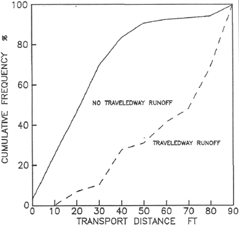 | 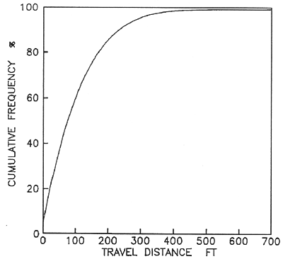 |
| Figure 11 -- Cumulative frequency of sediment transport distances below fillslopes without the influence of slumps, filter windrows, or culvert outflow. | Figure 12 -- Cumulative frequency of sediment travel distances below fillslopes with the influence of relief culverts. |
This relationship shows that for the Horse Creek roads, over half of the relief culverts had sediment transport distances exceeding about 75 ft. If the objective is to prevent 80 percent of the relief culverts from contributing sediment to streams, a distance of at least 175 ft must be provided between the culvert outfall and the nearest live water. This relationship probably varies substantially from place to place. However, because of the scarcity of this type of data, this information could be used to estimate leave strip widths below roads on sites similar to those in Horse Creek; gneiss and schist parent material and 30 to 40 percent side slope gradients.
Cutslopes
Many of the same variables that affect fillslope
surface erosion control are also applicable to the control of cutslope erosion:
type of erosion control treatment, application rate for mulch treatments, the
timing of treatment, slope gradient and length, and the inherent erodibility
of the soil. The literature and other research results provide little information
on erosion control treatments designed specifically for cutslopes. The same
erosion control treatments may be used on both fillslopes and cutslopes, with
the exception of wood chips and rock mulches, and hydromulch, which may not
be suitable for steep cutslopes. Research on the effectiveness of these treatments
often includes data from sites with slope gradients similar to cutslopes, that
is, 80 to 100 percent. We will assume that estimates of erosion control effectiveness
given in figures 2 through 5 will apply
to both fillslopes and cutslopes. Exceptions to this general rule will be discussed
where local data, experience, and observations indicate some treatments are
less effective under certain conditions.
Cutslope erosion processes are often quite different
from those on the fillslopes with gentler gradients. Dry raveling during the
summer months is a dominant process on cutslopes, especially on noncohesive
soils (Megahan 1978). In Oregon, Dyrness (1975) found that dry ravel sediment
production of cutslopes in tuffs and breccias was almost as large as rain-generated
sediment. Cutslope sediment production from the coarse sand Idaho Batholith
soils was usually two to five times higher during the summer and early fall
than during the remainder of the year (Boise State University 1984). However,
the partitioning between dry ravel and rain-caused sediment was not measured.
Bank sloughing when soils are saturated, especially during spring snowmelt,
may produce larger soil losses than dry ravel on cohesionless soils. Of the
total 2-year cutslope sediment production from border-zone gneisses and schists
in the Horse Creek watersheds (Nez Perce National Forest), 80 percent was produced
from November through mid-June and 20 percent during the summer and early fall.
King and Gonsior (1980) observed that bank sloughing during saturated soil conditions
was the dominant process.
As for fillslopes, if erosion control measures
are delayed following road construction, the first-year percentage reduction
in sediment for the treatment should be decreased.
Dry seeding alone provides no slope protection
until germination and growth of the young plants. However, if the seed remains
on the cutslope and germinates, then substantial reductions in erosion can occur.
A comparison of Swift's (1984b) sediment production data for 9.5 months prior
to seeding and 13.3 months following seeding, liming, and fertilization of the
same cutslope, indicates an 89 percent reduction in cutslope sediment production.
Dyrness (1975) measured sediment production from
1:1 cutslope plots in western Oregon established on tuffs and breccias. Comparison
of sediment production for the first year from the bare control plot and one
plot that was dry seeded and fertilized indicated about a 36 percent reduction
following seeding. This represents a reasonable expectation for first-year reduction
in cutslope sediment provided by grass seeding.
Observations on the Nez Perce National Forest
suggest that dry seeding is often not successful on 0.75:1 cutslopes unless
the vertical height is less than 6 to 8 ft. However, dry seeding will produce
good stands of grass if slopes can be laid back to a 1:1 or more gentle gradient
(Kennedy 1986). We recommend that a 10 percent, first-year reduction in sediment
be used for dry-seeding on 0.75:1 slopes with vertical height greater than 8
ft, and a 36 percent, first-year reduction on new cutslopes with a slope of
1:1 or less.
First-year sediment reductions for new 1:1 cutslopes
on tuffs and breccias in Oregon treated with 2 tons per acre of straw mulch
averaged about 85 percent (Dyrness 1975). Three treatments included straw mulch
and different seed mixtures, and one treatment was only straw mulch. This average
decreased slightly over time, and for the second through seventh year of evaluation,
the reduction in sediment averaged 77 percent. The slope length for these plots
was 20 to 25 ft.
Straw mulch applied with a tackifier is substantially
more effective in reducing cutslope sediment production than just straw mulch.
In the Horse Creek watersheds, a straw mulch (2 tons/acre) with asphalt tackifier
(250 gal/acre), seed (25 lb/acre) and fertilizer application (100 lb/acre of
24-16-0) on 0.75:1 new cutslopes in border-zone gneiss and schist material reduced
sediment by 32 to 47 percent over a 3-year period (King 1984). Vertical heights
of these cutslopes ranged from about 3 ft to over 40 ft. On slopes laid back
to 1.25:1, there was little rilling or deposition in the ditch, and the resulting
stand of grass was nearly uniform. Sediment reduction on these gentler slopes
probably exceeded 90 percent.
Goss and others (1970) qualitatively ranked the
erosion control effectiveness of various treatments on highway fill and cutslopes
and in reducing rill, sheet, and slump erosion for various slope gradients (1:1
to 3:1). For 1:1 slopes, these rankings are shown in table
3. The straw with asphalt tackifier was judged to be effective in controlling
sheet and rill erosion, and straw mulch alone was slightly less effective. The
ability to reduce slump erosion was rated substantially lower. For straw mulch
(2 tons/acre), we recommend using sediment reduction percentages of 35 percent
for 0.75:1 slopes and 40 percent for slopes at or less than a 1:1 gradient.
If an asphalt tackifier is used with the straw mulch, we recommend 40 percent
for 0.75:1 slopes and 75 percent for 1:1 or less steep slopes. Frost heaving
or ground ice will displace portions of the mulch and reduce its effectiveness.
Table 3 - Erosion control effectiveness of various treatments on 1:1 slopes (adapted from Goss and others 1970)
--------------------------------------------------------------------------------------------------------------------------------- |
|||||||
| Effectiveness rating1 | |||||||
------------------------------------------------------------------------------------------------------------------ |
|||||||
Erosion
type |
Jute
net |
Excelsior |
Straw
|
Straw
and asphalt3 |
Asphalt |
Wood
fiber (hydromulch)3 |
Sod |
| Sheet | 9 |
10 |
8 |
10 |
6 |
3 |
10 |
| Rill | 6 |
10 |
8 |
10 |
6 |
3 |
10 |
| Slump | 10 |
8 |
6 |
7 |
3 |
3 |
8 |
-------------------------------------------------------------------------------------------------------------------------------- |
|||||||
| 110 = most effective; 1 = not effective. | |||||||
| 2Application rate for asphalt is 968 gal/acre for asphalt alone and 400 gal/acre when applied with straw. | |||||||
| 3Application rate of 1,200 lb/acre. | |||||||
In the summer of 1985, two types
of erosion control mats were evaluated on 1:1 cutslopes with vertical heights
of 8 to 12 ft. Observations of the sediment leaving the mulched cutslopes compared
to sediment concentration data collected from bare slopes during simulated rainfall
suggest erosion reductions of about 98 percent. These tests were conducted on
border-zone gneiss and schist material on the Nez Perce National Forest. The
trade names of these erosion mats are: MIRAMAT, a plastic net-type mat; and
HOLD/GRO, a nylon-reinforced paper mulch. Because these were tested under simulated
rainfall conditions, no evaluation was possible of their ability to control
bank slough or slumping during saturated soil conditions. Swift (1987) in North
Carolina observed negligible sediment from an excelsior mat reinforced with
nylon netting placed over a newly seeded cutslope. One concern about the use
of erosion mats on cutslopes is whether the weight of winter snowpack will drag
the mat off the slope. Our observations of MIRAMAT and HOLD/GRO after two winters
showed no displacement on the cutslope. The recommended sediment reduction for
MIRAMAT and HOLD/GRO on 1:1 slopes is 95 percent. We assume that mass wasting
processes cannot be controlled by these cutslope treatments.
In Washington, Goss and others (1970) report effective
surface erosion control on 1:1 slopes using jute net mulches and excelsior matting.
The performance of any mat or netting will depend on the uniformity of the slope.
For example, Goss and others (1970) noticed some rill erosion under jute netting
where good contact with the ground was not achieved during application. We have
insufficient data to estimate the effectiveness of jute netting. For excelsior
mats, we recommend a sediment reduction of 75 percent on 1:1 cutslopes and 60
percent reduction on 0.75:1 slopes.
The Missoula Equipment Development Center, USDA
Forest Service, evaluated geotextile and geogrid systems that could be used
for revegetating slopes (Tour 1985). They concluded that unless the vertical
height of the slope is under 15 ft, slopes steeper than 1:1 should not receive
mat-type erosion control applications. This conclusion was based not on erosion
control effectiveness, but rather on time and labor requirements and practicality
of application.
Terracing is quite effective in reducing the amount
of soil leaving the cutslopes. Cutslope erosion may still be high, but eroded
soil is deposited on the level terraces rather than transported off the slopes.
Megahan (1984) reported that terraced and hydroseeded cutslopes constructed
in Idaho Batholith granitics resulted in an 86 percent reduction in sediment
production. These cutslope gradients ranged from 0.95:1 to 1.38:1. In California,
Wagner and others (1979) showed that laying back a 2:1 highway cutslope to a
1.5:1 gradient and terracing the slope in decomposed granitics reduced erosion
by about 94 percent. We recommend that 86 percent erosion reduction be used
when new cutslopes are terraced.
Hydromulching is not very effective on steep cutslopes.
Only a 10 percent reduction (not statistically significant at
α = 0.1
)
in sediment was realized over 3 years on 0.75:1 cutslopes on the Horse Creek
watersheds. Vertical heights of these slopes were usually less than 20 ft. Bank
sloughing during saturated soil conditions produced more sediment than surface
erosion processes, and hydromulch is not an effective control for mass erosion.
Goss and others (1970) ranked wood fiber effectiveness on 1:1 slopes low for
controlling rill, sheet, or slump erosion (table 3). We
recommend using a 10 percent sediment reduction for hydromulch on 0.75:1 slopes
and 30 percent for 1:1 and less steep cutslopes.
Established stands of dense grass are effective
in reducing erosion. An established grass stand has at least 70 percent vegetative
ground cover, including plant basal area and litter.
Once grass is established on the cutslope, the
recommended sediment reduction is 86 to 100 percent, depending on ground cover
density. For the sixth through 14th months following seeding of sandy loam cutslopes
in North Carolina, the sediment production rates were reduced 97 percent compared
to the 9.5 months after construction and before cutslopes were seeded (Swift
1984b). In Oregon, an average 86 percent reduction was achieved on four newly
constructed and seeded cutslope plots (three plots were also mulched) compared
to a control plot, for the second through seventh year after seeding (Dyrness
1975). The same treatments on a 5-year-old eroding cutslope resulted in a net
soil gain in the second through the fifth year averaging about 0.18 inch compared
to a net loss of 1.55 inches from the control plot.
All of the previously discussed cutslope erosion
control treatments will vary in effectiveness from site to site. Aspect, elevation,
soil type, and the occurrence of frost heaving may all be important factors,
but little information is available in the literature to develop any relationships
with treatment effects. Additionally, ditch maintenance may often undercut the
slopes, rejuvenating the erosion process. To reiterate, local experience and
observation should be used for application of the recommendations in this section.
Roadside Ditch
Reduction of sediment production from road traveledways
and cutslopes, through mitigation treatments, allows water with lowered sediment
concentration to flow down the ditch. This relatively clean ditch water has
increased capacity to detach soil from the ditch bottom and transport it to
the stream crossing.
Several methods are used to prevent erosion of
the ditch bottom, ranging from paving to mats of plastic, jute, or combinations
of artificial and natural materials. North American Green (1986) gives results
of flume tests of several mats used as channel liners, which show 0.25 inch,
or less soil loss with flow rates up to 9 ft3/s on a 12 percent slope.
These mats reduce water velocity from 56 to 78 percent and protect grass seedlings
until the vegetation becomes firmly rooted in the channel section. One disadvantage
to these woven mats is that routine grader maintenance on forest roads may catch
the mat and rip it out.
The most common erosion control treatment for
roadside ditches is a rock blanket, or riprap. The D50, Dmax, and
riprap thickness may be designed as a function of flow rate, channel slope,
and channel shape. The design procedure outlined here was based on Highway Research
Board Report 108 (Anderson and others 1970) with graphical solutions. These
graphs are not convenient to use and their range does not represent forest road
conditions. The basic design equations were used to develop a calculator program
for a design procedure suitable for forest roads. A flow chart to illustrate
the iterative procedure is shown in figure 13. Initial
flow depth (d) for trapezoidal channels is estimated by a regression equation
solving for d using flow rate, channel slope, channel side slopes, and a Manning's
n of 0.03. The procedure also may be used for triangular channels.
The procedure calculates the required D50 for riprap to maintain
channel stability for the selected design factors. Copies of this program may
be obtained from Burroughs, or the program may be copied from the program listing
in the Appendix.
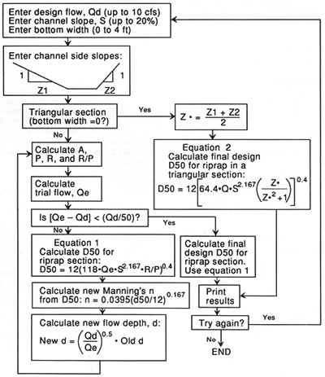
Figure 13 -- Flow chart for an HP-41 program to calculate riprap D50 for road ditches.
For an example, assume a 500-ft
road section on an 8 percent slope draining to a road crossing. The trapezoidal
ditch has a 0.5-ft bottom width, a 3:1 side slope on the road side, and a 1:1
slope on the cut side. The expected peak flow in the ditch is 0.4 ft3/s.
Enter Q = 0.4, road slope = 8, bottom width = 0.5, and the two side slopes,
3 and 1. The calculated D50 is 2.4 inches to protect the channel
bottom from this discharge on this channel slope.
An Environmental Protection Agency report (1976)
recommends that the maximum size of stone in the riprap be 1.5 times D50,
or 3.6 inches in this example. This report also recommends that the thickness
of the riprap blanket be 1.5 times the maximum rock size, but not less than
6 inches.
Another major consideration in riprap blanket
design is whether a filter is required between the riprap and the underlying
material (base). If the D50 of the base material is too fine relative to the
riprap, then flowing water may pull material out of the base and allow the riprap
to collapse. A criterion for determining if a filter is required is to compare
the D50 for the two layers:
| D50 Riprap | < 40 indicates that a filter will not be needed. |
| D50 Base |
In the example, assume that the
base material in which the road and ditch are constructed has a D50
of 1.1 mm. The required riprap has a D50 of 2.4 inches, or 61 mm.
The ratio of these two is 61/1.1 or 55, which indicates that a filter is needed.
One layer of plastic filter cloth is usually sufficient to separate the two
materials.
In this example, the road is to be surfaced with
crushed rock with an AASHO standard aggregate No. 4, with a D50 of
about 1 inch. The peak flow rate in the ditch for the upper 150 ft of the road
is estimated to be 0.07 ft3/s. The design procedure shows that the required
D50 for riprap in the ditch is 1.0 inch. Therefore, the road surfacing
material could be used in the upper 150 ft of road and the larger riprap rock
used in the lower 350 ft.
Combined Erosion Control on Traveledway, Cutslope, and
Ditch
Little information is available on the integrated
effects of mitigation measures applied to separate components of the road prism.
Tests by the Intermountain Research Station Engineering Technology project provide
some insight into these questions. Simulated rainfall was applied to 100-ft-long
bounded sections of forest road built in border-zone gneiss and schist in northern
Idaho (Burroughs and others 1983b). One section had a gravel-surfaced traveledway,
bare cutslope, and an unprotected ditch. The second section had no protection
on traveledway, cutslope, or ditch. Metal barriers and gutters were used to
collect traveledway runoff separately from the combined runoff from the cutslope
and ditch. Several rain applications were made on the section with the graveled
traveledway and unprotected ditch. Then gravel was placed in the ditch, and
several more rainfall applications were made to measure the sediment reduction
provided by this treatment. Next, gutters and barriers were removed so that
traveledway runoff could enter the ditch, and the total sediment production
from the entire section was measured over several rainfall applications. Finally,
gravel was removed from the ditch so that total runoff down an unprotected ditch
could be measured and the increased sediment production determined.
Figure 14
provides our estimate of the combined effects of a gravel road surface with
a protected ditch using the results of these barriered and unbarriered tests
on both the gravel-surfaced and unprotected section.
The upper curve in figure 14 represents the sediment
production to be expected from a 100-foot road section with no gravel on the
traveledway or in the ditch, and an unprotected cutslope in border-zone gneiss
and granite. The second curve results from a graveled traveledway and an unprotected
ditch and cutslope. Reduction in sediment yield from a 100-ft road section with
this treatment ranges from 27 percent for the first rainfall application to
40 percent for the last application with an average reduction of 33 percent.
The third curve represents an estimate of reduced
sediment production provided by a graveled traveledway and a graveled ditch,
relative to an unprotected road section. This reduction ranges from 49 percent
for the first rainfall application to 67 percent for the last, with an average
reduction of 57 percent. The application of gravel to the ditch in addition
to the traveledway reduces sediment production by an average of 24 percent.
The gravel used to protect the ditch in these tests was the same material used
to surface the traveledway, 1.5-inch minus gneissic rock with a D50
of 0.24 inches. The riprap design program estimated a D50 of about 1.1 inches
for a stable ditch with the flow rate, slope, and ditch shape present on this
site. Degradation of the ditch bottom at the lower end of the plot was measured
during these tests, which indicates that coarser gravel should have been used
to stabilize the ditch bottom. If so, then the reduction in sediment yield provided
by graveling the ditch would have been greater than shown by these tests. This
also suggests that the unprotected ditch may be a greater source of sediment
than the unprotected traveledway, at least for roads with a low traffic volume.
The bottom curve is an estimate of the additional
sediment reduction provided by protecting the cutslope. For this estimate, we
assumed that the cutslope protection was 80 percent effective and that the graveled
ditch did not itself provide any significant sediment. This hypothetical curve
was derived by subtracting an additional 80 percent of the sediment production
from the graveled road/graveled ditch curve. The estimated sediment reduction
provided by graveling the traveledway and ditch and protecting the cutslope
averages 91 percent.
Figure 14 -- Partitioning of sediment yield between components of the road prism.
Other items should be noted. The
effect of surface armoring is quite pronounced as rainfall and runoff detach
and remove fine soil particles and cause a progressively coarser surface texture.
Keep in mind that these curves result from simulated rainfall on two 100-ft
sections of road. Therefore, these results are accurate only for the relative
differences in sediment production provided by various mitigation treatments.
The values of sediment production in pounds per 100 ft3 of runoff should not
be used to represent results of natural rainfall or snowmelt.
The results of the simulated rainfall study for
partitioning road sediment did not include a bounded section of the fillslope
that would have allowed comparison of relative sediment yields between all road
features. However, information is available from one instrumented road section
at a stream crossing on a similar geology and soils. The road, one of the Horse
Creek roads on the Nez Perce National Forest, did not have any erosion control
treatments on the cuts or fills, and the road traveledway was unsurfaced. Instruments
to measure stream discharge and sediment concentration were installed at three
sampling sites along the stream channel (fig. 15): upstream from the road (station
A), at the outfall of the culvert passing the stream (station B), and about
150 ft downstream from the road (station C). The road was built in the summer
of 1979, and the stations were placed in operation at the end of the summer
and continued to operate for 4 years.
Figure 15 -- Road features and flow paths for the Horse Creek stream crossing with no erosion control measures.
These stations allow for partitioning
the sediment by that amount contributed via the ditch system and that amount
reaching the stream from the fill slope side of the road. The increase in sediment
yield between stations A and B is the sediment delivered to the stream via the
ditches, which would include eroded material from the cutslopes, ditches, and
a portion of the traveledway. The increase in sediment yield between stations
B and C is the sediment reaching the channel from the fillslope side of the
road, which includes eroded material from the fillslopes and a portion of the
traveledway, plus or minus channel storage. Figure 15 shows the road features,
drainage flow paths, and contributing areas to the stations.
This road section is unusual in that the traveledway
is crowned and drains to both the ditches and the fills. Another unusual feature
is a berm along much of the outside edge of the traveledway that carries water
along it for some length. This water is then diverted onto the unprotected fills
in two locations, one of which is directly above the channel. This berm was
not a designed feature in the road but was created during construction and maintenance
grading. Table 4 gives the areas of each road feature
contributing to the A and B stations. Note that the majority (72 percent) of
the traveledway that influences this stream drains onto the fillslopes.
The percentage of the total annual stream sediment
that is contributed via the ditch or fillslope side of the road varies over
time (table 5). During the first year after construction,
80 percent of the sediment reached the stream via the fillslope side of the
road. After 4 years the situation is reversed, and 83 percent of the sediment
is contributed via the ditch system. Over the entire 4 years, 47 percent of
the sediment reached the stream from the fillslope side of the road. These results
and supporting measurements of fillslope erosion and observation of sediment
and water-flow paths indicate that during the first year following road construction
at this stream crossing, the unconsolidated fillslopes near the stream generated
the majority of the stream sediment. Fillslope erosion was increased by drainage
from the traveledway immediately above the channel.
This case study of a bermed road suggests that
during the first year following construction, erosion control measures on the
fillslopes or immediately below the fillslopes would be more effective in reducing
stream sediment than measures to control cutslope and ditch erosion. However,
as the less steep fillslopes become armored and revegetated, then the primary
source of sediment is ditch and cutslope erosion. The results also suggest the
need to avoid undesigned berms that concentrate traveledway drainage and then
divert it onto the fillslopes. Insloping the road to the ditch or a more uniform
spacial distribution of traveledway drainage onto the fills would considerably
reduce fillslope contributions of stream sediment. This would require care during
routine blading to avoid altering the designed traveledway drainage such as
creating an undesigned berm along the outside edge of the traveledway.
Table 4 - Plan view areas of the road features contributing to B and C sampling stations.
------------------------------------------------------------------ |
|||
| Road feature | B station |
C station |
Total |
-----------------Ft2--------------- |
|||
| Cutslope | 3,478 |
3,478 |
|
| Ditch | 1,104 |
1,104 |
|
| Traveledway | 1,875 |
4,847 |
6,722 |
| Fillslope | 7,503 |
7,503 |
|
| ------------------------------------------------------------------ | |||
Table 5 - The partitioning
of total road sediment entering the stream via the ditch system and
the fillslope side of the road for the 4 years following construction.
| ----------------------------------------------------------------------------------------------------------- | |||||
Sediment |
Years |
||||
source |
--------------------------------------------------------- |
||||
1980 |
1981 |
1982 |
1983 |
Average |
|
---------------------------
Percent of total ------------------------ |
|||||
| Via the ditch | 20 |
48 |
60 |
83 |
53 |
| Via the fillslope
side of the road |
80 |
52 |
40 |
17 |
47 |
| Total road sediment at C station, lb |
2,492 |
2,132 |
6,997 |
1,317 |
|
----------------------------------------------------------------------------------------------------------- |
|||||
CONCLUSIONS
This paper provides land managers with a summary
of the effectiveness of various road treatments and practices in reducing erosion
and sediment transport. We have not included an exhaustive summary of all related
research, but we have provided information to improve estimation of sediment
yield from roads and to improve the decision-making process. Again, experience
and professional judgment are required in relating many of these results to
local situations.
Development continues on methods to reduce onsite
erosion from forest roads. This research is now part of a Forest Service study
of onsite erosion from roads and disturbed forest sites nationwide. The goal
of this long-term study is to develop a physical process model of onsite erosion
using easily measured site characteristics with user-selected hydrologic events
to evaluate alternative land management treatments. This effort to develop a
forest onsite sediment model is part of a larger cooperative effort with the
U.S. Department of Agriculture, and Agricultural Research Service, Soil Conservation
Service, and U.S. Department of the Interior, Bureau of Land Management, to
predict soil erosion from croplands, rangelands, and forests.
REFERENCES
Anderson, A. G.; Paintal, A. S.; Davenport, J. T. 1970. Tentative design procedure for riprap-lined channels. National Highway Research Program Report 108. Washington, DC: National Academy of Sciences, Highway Research Board. 75 p.
Barnett, A. P.; Diseker, E. G.; Richardson, E. C. 1967. Evaluation of mulching methods for erosion control on newly prepared and seeded highway backslopes. Agronomy Journal. 59: 83-85.
Bethlahmy, N.; Kidd, W. J., Jr. 1966. Controlling soil movement from steep road fills. Res. Note INT-45. Ogden, UT: U.S. Department of Agriculture, Forest Service, Intermountain Forest and Range Experiment Station. 4 p.
Boise State University. 1984. Project completion report: sediment yield from cut and fill slopes: Silver Creek research evaluation: Boise National Forest, Idaho. Cooperative Agreement INT-80-003-CA. Boise, ID: Boise State University, Department of Geology and Geophysics. 96 p.
Burroughs, E. R., Jr.; Haber, D. F.; Watts, F. J.; Kadoch, T. L. 1983a. Measuring surface erosion on forest roads and estimating costs of erosion control— preliminary results. In: Low volume roads: Third international conference, 1983. Transportation Research Record 989. Washington, DC: National Academy of Sciences, Transportation Research Board: 214-221.
Burroughs, E. R., Jr.; King, J. G. 1985. Surface erosion control on roads in granitic soils. In: Jones, E. B.; Ward, T. J., eds. Watershed management in the eighties: Proceedings; 1985 April 30-May 1; Denver, CO. [New York]: American Society of Civil Engineers: 183-190.
Burroughs, E. R., Jr.; Watts, F. J.; Haber, D. F. 1984. Surfacing to reduce erosion of forest roads built in granitic soils. In: O'Loughlin, C. L.; Pearce, A. J., eds. Proceedings symposium on effects of forest land use on erosion and slope stability. 1984 May 7-11; Honolulu, HI. Honolulu, HI: University of Hawaii, East-West-Center: 255-264.
Burroughs, E. R., Jr.; Watts, F. J.; King, J. G.; Haber, D. F.; Hansen, D.; Flerchinger, G. 1983b. Measurement of the relative effectiveness of rocked roads and ditches in reducing surface erosion, Rainy Day Road, Nez Perce National Forest, Idaho. Unpublished report on file at: U.S. Department of Agriculture, Forest Service, Intermountain Research Station, Forestry Sciences Laboratory, Moscow, ID. 25 p. plus appendixes.
Burroughs, E. R., Jr.; Watts, F. J.; King, J. G.; Haber, D. F.; Hansen, D.; Flerchinger, G. 1985a. Relative effectiveness of rocked roads and ditches in reducing surface erosion. In: Proceedings of the 21st annual engineering geology and soils engineering symposium; 1984 April 5-6; Moscow, ID. Moscow, ID: University of Idaho, Department of Civil Engineering: 251-263.
Burroughs, E. R., Jr.; Watts, F. J.; King, J. G.; Hansen, D. 1985b. Relative effectiveness of fillslope treatments in reducing surface erosion, Horse Creek Road, Nez Perce National Forest, Idaho. Unpublished report on file at: U.S. Department of Agriculture, Forest Service, Intermountain Research Station, Forestry Sciences Laboratory, Moscow, ID. 34 p.
Carlton, M. M.; King, J. G.; Tennyson, L. C. 1982. On-site erosion on natural and disturbed soils, and natural bedload sediment production in first-order drainages in the Gospel Hump Area. Completion report, Cooperative Research Agreement INT-80-115-CA with the U.S. Department of Agriculture, Forest Service, Intermountain Research Station, Ogden, UT, and the College of Forestry, Wildlife and Range Sciences, University of Idaho, Moscow, ID. 97 p.
Cline, R.; Cole, G.; Megahan, W.; Patten, R; Potyondy, J. 1981. Guide for predicting sediment yields from forested watersheds. Ogden, UT: U.S. Department of Agriculture, Forest Service, Northern and Intermountain Region and Intermountain Forest and Range Experiment Station. 42 p.
Cook, M. J.; King, J. G. 1983. Construction cost and erosion control effectiveness of filter windrows on fillslopes. Res. Note INT-335. Ogden, UT: U.S. Department of Agriculture, Forest Service, Intermountain Forest and Range Experiment Station. 5 p.
Dudeck, A. E.; Swanson, N. P.; Dedrick, A. R. 1967. Mulch performance on steep construction slopes. Rural and Urban Roads. May 1967. 4 p.
Dyrness, C. T. 1975. Grass-legume mixtures for erosion control along forest roads in western Oregon. Journal of Soil and Water Conservation. 30(4): 169-173.
Environmental Protection Agency. 1976. Erosion and sediment control. Surface mining in the eastern United States. Vol. 2, Design. Cincinnati, OH: Office of Technology Transfer. 243 p.
Goss, R. L.; Blanchard, R. M.; Melton, W. R. 1970. The establishment of vegetation on non-topsoiled highway slopes in Washington. Final Report. Pullman, WA; Washington State Highway Commission, Washington State University Agricultural Research Center. 14 p.
Gulf States Paper Corp. 1977. Report of sediment yield tests with HOLD/GRO erosion control fabric and competitive erosion control products. Vance, AL. 18 p.
Kay, B. L. 1984. Mulches aid plant establishment and erosion control on disturbed sites. Paper presented at Soil Erosion and Sedimentation Short Course, Washington State University Cooperative Extension, Olympia, WA; 1984 February 22-23. 24 p.
Kennedy, R. 1986. [Personal communication]. Grangeville, ID: U.S. Department of Agriculture, Forest Service, Nez Perce National Forest, Engineering Staff.
King, J. G. 1984. Ongoing studies in Horse Creek on water quality and water yield. Tech. Bull. 435. New York: National Council of the Paper Industry for Air and Stream Improvement: 28-35.
King, J. G. 1979. Fillslope erosion from forest roads. In: Proceedings, 34th meeting, 1979 October 3-5; Boise, ID. Pap. 79-404. St. Joseph, MI: American Society of Agricultural Engineers, 11 p.
King, J. G.; Gonsior, M. 1980. Effects of forest roads on stream sediment. Unpublished manuscript on file at: U.S. Department of Agriculture, Forest Service, Intermountain Research Station, Forestry Sciences Laboratory, Moscow, ID. 19 p.
Kochenderfer, J. N.; Helvey, J. D. 1987. Using gravel to reduce soil losses from minimum-standard forest roads. Journal of Soil and Water Conservation. 42: 46-50.
Megahan, W. F. 1974. Erosion over time on severely disturbed granitic soils: a model. Res. Pap. INT-156. Ogden, UT: U.S. Department of Agriculture, Forest Service, Intermountain Forest and Range Experiment Station. 14 p.
Megahan, W. F. 1978. Erosion processes on steep granitic roadfills in central Idaho. Journal of Soil Science Society of America. 42: 350-357.
Megahan, W. F. 1984. Road effects and impacts—Watershed. In: Proceedings, forest transportation symposium; 1984 December 11-13; Casper, WY. Lakewood, CO: U.S. Department of Agriculture, Forest Service, Rocky Mountain Region, Engineering Staff Unit; 1985: 57-97.
Meyer, L. D.; Wischmeier, W. H.; Foster, G. R. 1970. Mulch rates required for erosion control on steep slopes. Journal of Soil Science Society of America. 34: 928-931.
Meyer, L. D.; Johnson, C. B.; Foster, G. R. 1972. Stone and wood chip mulches for erosion control on construction sites. Journal of Soil and Water Conservation. 27: 264-269.
North American Green. 1986. Erosion control blankets. Evansville, IN: North American Green. 18 p.
Ohlander, C. A. 1964. Effects of rehabilitation treatments on the sediment production of granitic road materials. Fort Collins, CO: Colorado State University. 78 p. Thesis.
Rothwell, R. L. 1983. Erosion and sediment control at road-stream crossings. The Forestry Chronicle. 59: 62-66.
Swift, L. W., Jr. 1984a. Gravel and grass surfacing reduces soil loss from mountain roads. Forest Science. 30(3): 657-670.
Swift, L. W., Jr. 1984b. Soil losses from roadbeds and cut and fill slopes in the southern Appalachian Mountains. Southern Journal of Applied Forestry. 8(4): 209-213.
Swift, L. W., Jr. 1985. Filter strip widths for forest roads in the southern Appalachians. Southern Journal of Applied Forestry. 10(1): 27-34.
Swift, L. W., Jr. 1987. [Personal communication]. U.S. Department of Agriculture, Forest Service, Coweeta Hydrologic Laboratory, Otto, NC.
Tour, J. W. 1985. Revegetating slopes with geotextile and geogrid systems. U.S. Department of Agriculture, Forest Service, Equipment Development Center, Missoula, MT. 58 p.
Wagner, M.; Egan, J.; Wain, G. F.; Howell, R. B. 1979. Erosion measurements on a smooth and stepped highway slope (District 11). Interim Report 19703-657108. Sacramento, CA: California Department of Transportation, Office of Transportation Laboratory. 49 p.
Wischmeier, W. H.; Smith, D. D. 1965. Predicting rainfall-erosion losses from cropland east of the Rocky Mountains. Agric. Handb. 282. Washington, DC: U.S. Department of Agriculture. 47 p.
Wollum, A. G., II. 1962. Grass seeding as a control for road bank erosion. Res. Note PNW-218. Portland, OR: U.S. Department of Agriculture, Forest Service, Pacific Northwest Forest and Range Experiment Station. 5 p.
APPENDIX: HP-41 PROGRAM TO DESIGN RIPRAP FOR CHANNEL PROTECTION
Road Ditch Cross Section
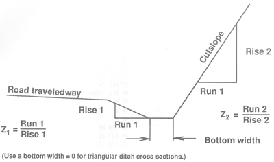
Example Calculations
Example 1 RIPRAP DESIGN MARCH 1989 Q, CFS = 0.100 DITCH SLOPE, % = 21.00 SLOPE > 20, TRY AGAIN DITCH SLOPE, % = 8.00 BOTTOM WIDTH, FT = 0.50 Z1 = RUN1/RISE1= 3.00 Z2 =RUN2/RISE2= 1.30 D50= 1.23 IN.
Example 2 RIPRAP DESIGN MARCH 1989 Q, CFS = 0.200 DITCH SLOPE, % = 8.00 BOTTOM WIDTH, FT = 0.00 Z1 =RUN1/RISE1= 3.00 Z2 =RUN2/RISE2= 1.00 D50= 2.59 IN. END
Program Printout (complete listing available upon request) 236*LBL 99 237 "END" 238 AVIEW 239 STOP 240 .END.
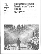 Burroughs, E.R., Jr.; King, J.G. 1989. Reduction of soil erosion on forest roads. General Technical Report INT-264. Ogden, UT: U.S. Forest Service Intermountain Research Station. 21 p.
|
|
USDA Forest Service Rocky Mountain Research Station Moscow Forestry Sciences Laboratory 1221 South Main Street, Moscow, ID 83843 https://forest.moscowfsl.wsu.edu/ |
|